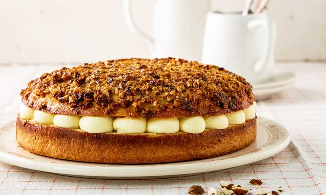

THE VIKING HONEY CAKE (BIENENSTICH)
The bienenstich, which in German translates to "bee sting", is a delicious dessert. It's made on a yeasty sweet bread, so it's a little more savory than a regular cake. However, what it loses sweetness in the body, it makes up for on top, with its crunchy, honey almond coat. What's even better about this cake is the history. This cake's name was founded in the 15th century after German raiders successfully conquered a neighboring village by flinging swarming beehives into the throng. I like to think that they were vikings. Honey-crazed vikings.

Ingredient List
Cake:
- 2 1/4 teaspoons (or 1 1/4-ounce package) instant yeast (not active dry) (also sold as rapid rise or bread machine yeast)
- 3/4 cup whole milk, ideally at room temperature
- 1/4 cup granulated sugar
- 2 cups all-purpose flour
- 3/4 teaspoon table salt
- 2 large eggs, ideally at room temperature
- 4 tablespoons unsalted butter, at room temperature
Honey-Almond-Crunch Topping:
- 6 tablespoons unsalted butter, cold is fine
- 1/3 cup granulated sugar
- 3 tablespoons honey
- 2 tablespoons heavy cream
- 1 1/2 cups (4 3/4 ounces) sliced almonds
- Two pinches of sea salt
Pastry Cream Filling:
- 1 cup whole milk
- 1 teaspoon pure vanilla extract
- 3 large egg yolks
- 1/4 cup granulated sugar
- 3 tablespoons all-purpose flour or cornstarch
- 2 pinches sea salt
- 3ish tablespoons honey
- 2 tablespoons unsalted butter, cold is fine
Preparation
- Combine all of the cake ingredients in a bowl, stirring till it combined and battery, then stirring for two minutes more. In a stand mixer, you can mix this with the paddle attachment OR you can make like me and use a little elbow grease at low-medium speed for 2 to 3 minutes.
- Get all the batter off of the sides of the bowl and then cover with plastic wrap to let rise for an hour.
- Meanwhile, we gotta make the honey crunchy yummy top. In medium saucepan over medium heat, heat the butter, sugar, honey, cream and salt until the butter is melted. Bring to a simmer and let it boil for 3 to 5 minutes.
- Then add the almonds. It will get real thick and candy-like but don't sweat it. Set it aside to cool.
- Butter and flour a 8-inch round cake pan. I only had a 10 inch, which is why my cake is a little thin, but if you have something even smaller, go for it. Deflate the batter and then nudge it until it fills the bottom of the pan. Cover again with plastic wrap and set aside for another 30 minutes.
- Heat your oven to 350 degrees.
- Once the cake has finished its second rise (that little guy still won't rise that much, but don't worry, every dog has his day) you gotta put the almond crunchy stuff on the cake.
- Bake cake for 20 to 25 minutes, until top is bronzed and toothpick inserted into the center comes out batter-free. The caramel stuff will start to bubble and look super scary, but it settles and soaks as soon as the cake comes out of the oven, so don't fret.
- Transfer to a cooling rack and after it sits a bit, run a knife around the circumference to free it from its spring form clutches
- To make the pastry filling, which you might want to do while the dough is rising the second time, Warm milk in a medium saucepan. Slowly drizzle 1-2 tablespoons of honey into the milk and warm it. Pour into a small bowl or cup, and set aside.
- Rinse saucepan and off the heat, whisk the yolks and sugar together like an angry viking. Whisk in flour and salt. Drizzle in warm honey-milk a spoonful at a time while whisking. Once you've add half of it, you can add the rest and return the saucepan to a medium-high heat until it bubble, then simmer for one to two minutes. Off the heat, whisk in the butter and vanilla extract.
- Cool custard and cake completely before assembling the cake. I put the custard in the fridge.
- Finally, assemble the cake by flipping it and dividing it in half, width-wise, with a serrated knife.
return to home page